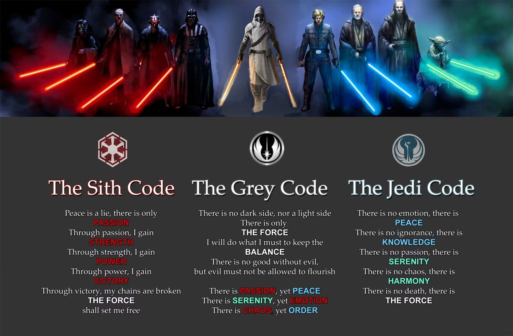

- Formed in 25,025 BBY (Before the Battle of Yavin, AKA before the events of Star Wars: Episode IV).
- An organization dedicated to promoting the "Light Side" of the Force.
- With noble origins, they eventually shifted into a dogmatic and narrow-minded group, which was ultimately their downfall.
- They fell in approximately 20 BBY at the hands of Galactic Senate Chancellor Sheev Palpatine and his apprentice, former Jedi Anakin Skywalker. Skywalker later became known as Darth Vader.
- Formed in 5,000 BBY when a group of Jedi sought to harness the "Dark Side" of the Force.
- The Sith seek power for themselves above all else. This caused infighting that almost lead to their downfall in approx. 1,000 BBY, causing Darth Bane to create the "Rule of Two"
- The Rule of Two states that there can only be one Sith Master and one Apprentice in existence at a time, so a total of two Sith. This was followed rigidly until the Sith downfall in approx. 4 ABY (After the Battle of Yavin).
- The Sith slowly diminished in power over time. The most powerful Sith was named Darth Nihilus. Born around 4,000 BBY, he regularly drained entire solar systems of their life energy to power himself.
- Though there's no official organization by that name, many Jedi saw past the narrow mindset of the Jedi Council and left the Order, beginning to dabble in the Dark Side without letting it consume them.
- While the term is most popularly applied to dark-leaning Jedi, it equally applies to anyone who left the Jedi Order but continued to practice force-wielding, often with a lightsaber
- The most notable Grey Jedi is Ahsoka Tano, who left the order after being falsely accused of treason. Apprentice to Anakin Skywalker before his fall to the Dark Side, Tano is easily one of the galaxy's most powerful force users, pilots, and combatants.
- There is relatively very little official information about Grey Jedi, due to being composed solely of individuals, not an organization. Still, some fans have created a Grey Jedi code, similar to that of the Jedi and Sith.
- Chirrut Îmwe was a monk who centered himself on the Force, enabling him to "see" (though he was blind). He died at the Battle of Scarif in a successful effort to steal the Death Star blueprint for the Rebellion.
- The Zeffo were a species who interacted regularly with the Force. They went extinct when the Empire, led by Darth Vader and Sheev Palpatine, stripped their planet for resources as part of Project Auger at some point between 20 BBY and 14 BBY.
- There are hundreds of other examples of individuals and species who utilized force sensitivity, but the two above are my personal favorites.
Here's a graphic displaying the respective creeds of the Sith, Jedi, and Grey Jedi
Here's an interactive chart showing information about the core characters in Star Wars: A New Hope

This is widely considered the best animated Star Wars fight scene. It's between Ahsoka Tano and debatably the only ever "Grey Sith", Maul of Dathomir.
Go to top